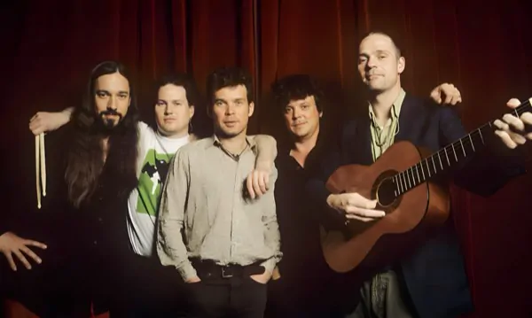
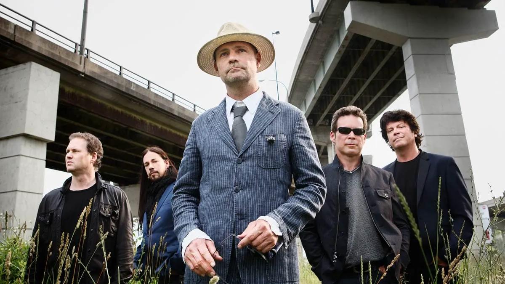
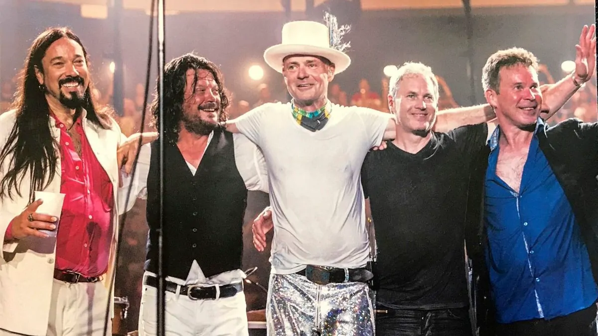

On This Day in Hip History
Checking the archive...
🎧 Show of the Day
Picking today's show...

Photo: Anthony Pidgeon

Photo: Gordon Hawkins

Photo: David Bastedo
Hey, it's jD here. The Hip Handbook is a free fan archive for The Tragically Hip: every official release, 1,355 live shows and appearances, lyrics, setlists, and rare recordings, all in one place. Pick a door and dig in.

Photo: Anthony Pidgeon

Photo: Gordon Hawkins